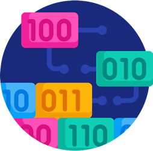
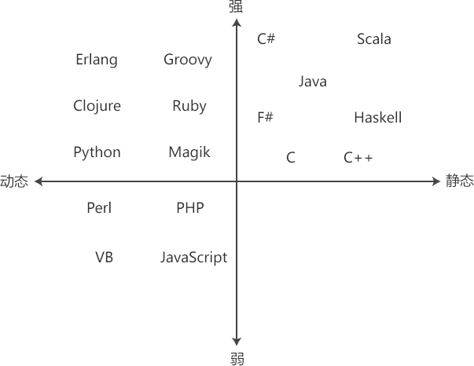

动态语言、静态语言、强类型语言、弱类型语言的区别
我们在学习编程语言的类型系统时，经常听说“静态语言”“动态语言”“强类型语言”和“弱类型语言”这些概念，它们究竟是什么意思呢？各个概念之间又有什么区别呢？
如果你阅读互联网上的博客，你也可能会发现一些矛盾的观点，有的作者糊涂地认为
静态/动态语言应该放在一起提及，它们是从同一种维度来评价类型系统；而强类型/弱类型语言应该放在一起提及，它们是从另外一种不同的维度来评价类型系统。
静态语言并不意味着强类型，动态语言也不意味着弱类型，一种编程语言的类型系统可以是静态/动态和强/弱的任意组合，例如：
创作本文花费了我将近一周的时间，我查阅了大量中英文资料，并反复确认，确认不会出错。本文信息量丰富，观点鲜明，通过阅读本文，您不但会解开以上疑惑，还将对类型系统有更加深刻的认知。
在很多编程语言（比如 C/C++、Java、C# 等）中，定义变量时除了需要指明变量的名字，还需要告诉计算机它是什么类型，比如简单的整数、浮点数、字符串，还有复杂的类、结构体、数组。
编程语言中的数据最终都要放到内存中，在内存中存取数据要明确三件事情：数据存储地址、数据的长度以及数据的处理方式。
变量名不仅仅是为数据起了一个好记的名字，还告诉我们数据的存储地址，使用数据时，只要提供变量名即可，变量名会自送转换成数据在内存中的地址。而数据类型则指明了数据的长度和处理方式，它确定了除地址以外的其它所有信息。
诸如
每种编程语言都有一个数据类型系统，没有它的话，计算机将不知道如何处理我们程序中的数据，这包括：
我们可以在不了解底层类型系统的情况下开始编程，这就是高级语言的美妙之处。但是，了解我们程序中的数据将给编程带来巨大的优势，如下所示：
请看下面的一个例子：
静态类型的编程语言有很多，常见的有 C/C++、Java、C#、Go 等。
动态类型的编程语言在创建数据时往往不需要指明该数据的类型，而且数据的类型也会随着值的改变而改变，给数据赋予不同的值，数据将得到不同的类型。
有的读者可能会问，不给数据指明类型，编程语言是如何知道它的类型的呢？编程语言会根据赋予数据的值进行猜测或者推断。对于上面的第一行代码，PHP 知道 42 是一个整数，将 42 赋值给变量 $myNumber，PHP 也会推断出 $myNumber 是一个整数类型。
add() 函数包含的参数类型，会根据调用 add() 时传递的值进行推断；add() 函数包含的返回值类型，会根据
对动态类型语言，类型是推断出来的，甚至可以在程序运行期间更改。我们可以给上面的程序中增加一行代码，把
常见的动态类型语言有 JavaScript、PHP、Python、Ruby 等。
这很好，因为越早发现错误，您的代码就越强大，您将来修复它的成本就越低。在部署之前修复问题，要比部署之后修复问题容易得多。
那么，使用静态类型是不是就一定正确呢？好吧，使用静态类型的负担就是，在使用数据之前你必须明确地将它定义好。你必须输入更多的代码，你必须事先知道正在使用的数据的类型，你必须知道你的操作过程中会发生什么。
然而由于我们的疏忽或者知识缺陷，这有时候是比较困难的。例如在 C/C++ 中，你必须知道
在这方面，动态类型语言就为我们提供了更多灵活性，程序员经常称动态语言“更具表现力”。例如在 PHP 中，
然而问题在于，解释器有时候会对数据类型做出错误的猜测，你必须知道这种情况，否则这将成为一个潜在的危险，因为解释器不会给出错误提示。
由于我们不能捕获所有的潜在危险，因此使用动态语言编写的代码往往更加脆弱，也更容易出错。
动态语言中的数据类型通常在程序运行期间才能确定，这使得程序在被部署到生产环境之前很难捕获太多错误。程序可能在你的本地机器上正常工作，但是生产环境可能略有不同，解释器就会产生一些不同的猜测，这将导致潜在的风险。
JavaScript 被认为是一种典型的动态语言。随着 TypeScript（JavaScript 的超集）的诞生，程序员也想在定义变量时能够声明它的类型，以使 JavaScript 变得更加静态。
JavaScript 臭名昭著的地方之一就是在处理数据及其类型时会做一些糟糕的猜测。随着 JavaScript 越来越流行，人们已经不限于在浏览器上使用它了，大名鼎鼎的 Node.js 使得人们可以在脱离浏览器，直接在机器上运行 JavaScript。此时程序员意识到为 JavaScript 增加静态类型的好处，这样能够消除 JavaScript 在处理数据类型时所做的一些错误猜测。
将动态语言 JavaScript 变得更像静态语言，可以及时发现错误，并生成更加健壮的代码。在 Node.js 的帮助下，JavaScript 越来越多地渗透到服务器端编程，让 JavaScript 变得静态就显得尤为重要。
强/弱类型指的是编程语言如何处理运算过程中的值。当值的类型不符合运算规则时，编程语言究竟是做出一些猜测，临时转换值的类型以帮助人们解决问题，还是停止运行，提醒人们不应该这样做？
在这个例子中，我们将变量 b 定义为字符串类型，但是在使用 b 的时候，我们对它施加了一种不匹配的运算（字符串类型不支持算数求和运算）。
C++ 也可以在后台默默地做一些猜测，临时将字符串
这就是强类型语言的典型特征，它们不会处理与类型定义明显矛盾的运算，而是把它标记为一个问题，并作为错误抛出。通常人们认为 C/C++、Java、C#、Python、Go 都是强类型语言，它们都不允许上述代码中的行为。
下面的例子中，我们使用 JavaScript 代码执行与上述 C++ 代码类似的操作：
对于相加运算，如果
PHP 也是一种典型的弱类型语言，对 PHP 执行类似的操作，它的结果是怎样的呢？请看下面的代码：
55
你对这个结果可能会比较惊讶，认为它和预期的不一样，这是因为 PHP 对值的类型进行了不同的转换。PHP 会将变量 $a 的值转换为字符串类型，然后再和变量 $b 的字符串拼接起来，得到一个新的字符串。
类型系统的“强/弱”指的是当编程语言遇到与类型定义不匹配的运算时，尝试猜测或者转换的力度/程序。它不是一条明确的界限，而是一个范围。
强/弱类型是一个相对概念，将两种语言放在一起对比时，才更容易发现孰强孰弱。
例如，将整数
强类型使得程序被部署到生产环境时更加强壮，不易出错；但是，我们需要付出更多成本，这包括花费更所时间编写代码，以及解决更多细枝末节的问题。
相反的，弱类型语言消除了强类型语言的严格性，在较大程度上允许程序构建并正常运行，因此弱类型语言更有灵活性和表达性。
弱类型语言不利的一方面是，它可能错误地猜测程序员的意图，并得到不被期望的运行结果。
JavaScript 是一种弱类型语言（恰好也是动态语言），但是可以使用 TypeScript 增强，以使程序更加健壮。TypeScript 改变了类型系统，它允许程序员在定义变量时增加显式类型声明，这样 JavaScript 就能获得强类型语言的好处，在编译时捕获更多错误，并防止一些模糊的猜测被带入到生产环境。
此外，支持 TypeScript 的编辑器也可以你编写代码时就给出错误提示，VS Code 编辑器就是一个典型的例子。
让编程语言的强/弱变成一个范围的原因是，有些语言提供了一些工具或特性来帮助及时地转换类型，比如 C/C++ 中的
人们通常认为，Java 拥有比 C/C++ 更强的类型，而 C/C++ 显然又比 JavaScript 拥有更强的类型。
在十年的编程生涯中，我发现了解编程语言强/弱的每一个细微差别并不那么重要，只要你了解一些基本知识，并能分辨出强/弱之间的差异，就能为给定的项目和要求选择合适的编程语言。
处于上下游链条的关键位置的项目，往往要求内存严格、高效，并且要尽早发现错误，如果你正在开发这样的项目，你可能需要频繁查看内存中的内容，此时使用静态语言更有帮助。
很多关键的算法不应该让编程语言做出过多猜测，而且指令要严格，不能含混，此时应该考虑强类型语言。
很多 3A 大作游戏就使用静态+强类型语言，例如 C++。
如果你希望快速且灵活地开发完成一个项目，并且不受太多约束，那么动态+弱类型语言将是不错的选择。比如，很多中小型网站就使用 PHP 开发。
某些动态的强类型语言也能提供足够的便利性，比如 Python，很多人使用它来开发小工具，或者 Web 项目，或者机器学习项目。
如果你觉得本文信息量丰富，不能 Get 所有细节，那么我希望你铭记两个观点：
下图使用象限示意图汇总了常用编程语言的不同分类：
注意，有些文章将 C/C++ 看做弱类型语言，这一点已经在前面讨论过，不过我倾向于认为 C/C++ 是强类型语言。
最后，感谢你的阅读，祝你在下一个项目中能够选择理想的编程语言。
如果你阅读互联网上的博客，你也可能会发现一些矛盾的观点，有的作者糊涂地认为
静态语言=强类型语言，或者动态语言=弱类型语言，但它们其实不是一回事。静态/动态语言应该放在一起提及，它们是从同一种维度来评价类型系统；而强类型/弱类型语言应该放在一起提及，它们是从另外一种不同的维度来评价类型系统。
静态语言并不意味着强类型，动态语言也不意味着弱类型，一种编程语言的类型系统可以是静态/动态和强/弱的任意组合，例如：
- C/C++/Java 是静态语言 + 强类型；
- JavaScript/PHP 是动态语言 + 弱类型；
- Python 是动态语言 + 强类型。
创作本文花费了我将近一周的时间，我查阅了大量中英文资料，并反复确认，确认不会出错。本文信息量丰富，观点鲜明，通过阅读本文，您不但会解开以上疑惑，还将对类型系统有更加深刻的认知。
什么是数据类型？
如果你是一名程序员，那你一定使用过变量、函数参数或者函数返回值，它们都用来表示数据，在编程语言中无处不在；但是，你是否知道它们的真正含义呢？又是否知道它们在后台如何控制计算机的呢？

在很多编程语言（比如 C/C++、Java、C# 等）中，定义变量时除了需要指明变量的名字，还需要告诉计算机它是什么类型，比如简单的整数、浮点数、字符串，还有复杂的类、结构体、数组。
编程语言中的数据最终都要放到内存中，在内存中存取数据要明确三件事情：数据存储地址、数据的长度以及数据的处理方式。
- 数据存储地址决定了数据放在哪里；
- 数据长度决定了当前数据使用了多少个字节的内存；
- 数据处理方式不仅让计算机能够正确转换数据的内容，不至于导致“乱码”，还让计算机知道如何处理基于该数据的各种运算，比如加减乘除。
变量名不仅仅是为数据起了一个好记的名字，还告诉我们数据的存储地址，使用数据时，只要提供变量名即可，变量名会自送转换成数据在内存中的地址。而数据类型则指明了数据的长度和处理方式，它确定了除地址以外的其它所有信息。
诸如
int n;、char c;、float money;这样的变量定义形式就确定了数据在内存中的所有要素。每种编程语言都有一个数据类型系统，没有它的话，计算机将不知道如何处理我们程序中的数据，这包括：
- 计算机不知道数据的长度，不知道该操作多少个字节；
- 计算机不知道如何将值存储到内存，不知道如何解析内存中的值；
- 计算机不知道如何运算数据。
我们可以在不了解底层类型系统的情况下开始编程，这就是高级语言的美妙之处。但是，了解我们程序中的数据将给编程带来巨大的优势，如下所示：
1) 可以更少地使用内存资源
当数据量比较大时，采用长度较小且够用的数据类型，将节省成百上千个字节的内存空间。2) 可以读懂报错信息
比如将两份数据相加时可能报错，因为其中一个是数字类型，一个是字符串类型，虽然人类眼睛看起来都是数字，但是计算机不允许对字符串类型执行相加操作，这告诉我们，不能使用引号来包围数字。3) 改变规则
一旦你知道数据类型是如何工作的，你就可以像电影《黑客帝国》中的 Neo 一样，知道如何改变规则。比如将一个字符和一个整数相加，就可以得到另一个字符。静态类型语言和动态类型语言
静态类型和动态类型应该放在一起提及，它们从「如何得到数据的类型」这一维度来评价类型系统。1) 静态类型语言
静态类型指的是在创建一份数据（变量、参数、返回值等）时需要显式指明该数据的类型。通常情况下，这些数据的类型一旦被定义，在程序的整个生命周期也不再改变。请看下面的一个例子：
int myNumber = 42; //整数类型
string name = "Rocky Balboa"; //字符串类型
final double PI = 3.141592; //双精度浮点类型
// add() 函数包含两个整数类型的参数，返回值也是整数类型
public int add(int a, int b) {
return a + b;
}
这是一段 Java 代码，它定义了几个变量，以及一个求和函数。如您所见，我们已经明确地指明了要处理的数据类型，包括整数、双精度浮点数、字符串。如果没有给编译器这些提示，编译器将不知道如何处理 myNumber，它只是一个对我们有意义的名称，但是计算机不理解它。静态类型的编程语言有很多，常见的有 C/C++、Java、C#、Go 等。
2) 动态类型语言
让我们再对比一下动态类型的语言，请看下面的例子：
$myNumber = 42; //整数类型
$name = "Rocky Balboa"; //字符串类型
$PI = 3.141592; //单精度浮点类型
// add() 包含两个参数和一个返回值
function add($a, $b) {
return $a + $b;
}
这是一段 PHP 代码，如您所见，我们并没有使用任何明确的数据类型，这就是一种典型的动态类型语言。动态类型的编程语言在创建数据时往往不需要指明该数据的类型，而且数据的类型也会随着值的改变而改变，给数据赋予不同的值，数据将得到不同的类型。
有的读者可能会问，不给数据指明类型，编程语言是如何知道它的类型的呢？编程语言会根据赋予数据的值进行猜测或者推断。对于上面的第一行代码，PHP 知道 42 是一个整数，将 42 赋值给变量 $myNumber，PHP 也会推断出 $myNumber 是一个整数类型。
add() 函数包含的参数类型，会根据调用 add() 时传递的值进行推断；add() 函数包含的返回值类型，会根据
$a + $b的运算结果进行推断。这意味着，add() 可以接受两个整数并返回一个整数，或者接受两个浮点数并返回一个浮点数。对动态类型语言，类型是推断出来的，甚至可以在程序运行期间更改。我们可以给上面的程序中增加一行代码，把
"c.biancheng.net"赋值给 $myNumber 变量，这样 PHP 将把 $myNumber 变量切换为字符串类型。常见的动态类型语言有 JavaScript、PHP、Python、Ruby 等。
静态类型和动态类型各有什么优势？
对于静态类型语言，我们需要预先明确地告诉编译器要处理的数据的类型，这样在程序部署之前就能发现代码中的错误或者疏忽。比如我们将一个变量定义为整数，将另一个变量定义为字符串，如果我们尝试将两个变量相加，那么编译器在编译期间可能就会捕获这种语法错误，并且不会让我们完成程序的构建。这很好，因为越早发现错误，您的代码就越强大，您将来修复它的成本就越低。在部署之前修复问题，要比部署之后修复问题容易得多。
那么，使用静态类型是不是就一定正确呢？好吧，使用静态类型的负担就是，在使用数据之前你必须明确地将它定义好。你必须输入更多的代码，你必须事先知道正在使用的数据的类型，你必须知道你的操作过程中会发生什么。
然而由于我们的疏忽或者知识缺陷，这有时候是比较困难的。例如在 C/C++ 中，你必须知道
1/3得到的是整数 0，而不是浮点数 0.3333...，这对初学者来说是一个坑。在这方面，动态类型语言就为我们提供了更多灵活性，程序员经常称动态语言“更具表现力”。例如在 PHP 中，
1/3将会得到 0.3333...，这在很多时候都是我们期望的结果。然而问题在于，解释器有时候会对数据类型做出错误的猜测，你必须知道这种情况，否则这将成为一个潜在的危险，因为解释器不会给出错误提示。
由于我们不能捕获所有的潜在危险，因此使用动态语言编写的代码往往更加脆弱，也更容易出错。
动态语言中的数据类型通常在程序运行期间才能确定，这使得程序在被部署到生产环境之前很难捕获太多错误。程序可能在你的本地机器上正常工作，但是生产环境可能略有不同，解释器就会产生一些不同的猜测，这将导致潜在的风险。
JavaScript 被认为是一种典型的动态语言。随着 TypeScript（JavaScript 的超集）的诞生，程序员也想在定义变量时能够声明它的类型，以使 JavaScript 变得更加静态。
JavaScript 臭名昭著的地方之一就是在处理数据及其类型时会做一些糟糕的猜测。随着 JavaScript 越来越流行，人们已经不限于在浏览器上使用它了，大名鼎鼎的 Node.js 使得人们可以在脱离浏览器，直接在机器上运行 JavaScript。此时程序员意识到为 JavaScript 增加静态类型的好处，这样能够消除 JavaScript 在处理数据类型时所做的一些错误猜测。
将动态语言 JavaScript 变得更像静态语言，可以及时发现错误，并生成更加健壮的代码。在 Node.js 的帮助下，JavaScript 越来越多地渗透到服务器端编程，让 JavaScript 变得静态就显得尤为重要。
总结
静态语言为我们提供了一个更加严格的编程环境，并且通常会生成更加健壮的代码。动态语言为编写代码带来了灵活性，同时也提高了编写代码的效率，但是如果你不注意数据的类型，可能就会导致代码更容易出错。强类型语言和弱类型语言
正如前面提到的，人们经常混淆静态/动态类型和强/弱类型的概念，倾向于将静态类型等同于强类型，将动态类型等同于弱类型，实际上这是不对的。强/弱类型指的是编程语言如何处理运算过程中的值。当值的类型不符合运算规则时，编程语言究竟是做出一些猜测，临时转换值的类型以帮助人们解决问题，还是停止运行，提醒人们不应该这样做？
1) 强类型语言
让我们从一个例子入手解释一下：
int main() {
int a = 5;
std::string b = "5";
// 编译器会报错
std::cout << (a + b);
return 0;
}
这是一段 C++ 代码，我们尝试将一个整数和一个字符串相加，很显然这是没有意义的，编译器会停止构建，并抛出一条错误信息。在这个例子中，我们将变量 b 定义为字符串类型，但是在使用 b 的时候，我们对它施加了一种不匹配的运算（字符串类型不支持算数求和运算）。
C++ 也可以在后台默默地做一些猜测，临时将字符串
"5"转换成整数5，这样以上代码就能行得通；但是 C++ 并不会这样做，它会立即标记此处的问题（也即报错），并放弃构建，交给程序员自己处理。这就是强类型语言的典型特征，它们不会处理与类型定义明显矛盾的运算，而是把它标记为一个问题，并作为错误抛出。通常人们认为 C/C++、Java、C#、Python、Go 都是强类型语言，它们都不允许上述代码中的行为。
现在虽然有办法削弱 C++ 的强类型系统，让 C++ 能够容忍一些与类型定义不匹配的运算，但是这超出了本文的讨论范围，所以不再赘述。
2) 弱类型语言
和强类型语言不一样，当我们执行一些与类型定义不匹配的运算时，弱类型语言尝试提供帮助，它可能会临时转换值的类型，让它符合当前运算。下面的例子中，我们使用 JavaScript 代码执行与上述 C++ 代码类似的操作：
var a = 5; var b = "5"; console.log( a+b );如果你对 JavaScript 特性有所了解，就会知道这段代码不会报错，而是正常运行，它会在控制台上显示 10，这也许正是你所期望的。
对于相加运算，如果
+两边的值的类型不一样，那么 JavaScript 将尝试转换其中一个值的类型，让它和另一个值的类型相同，然后再进行运算，并给出运算结果。这里之所以显示 10，是因为 JavaScript 将变量 b 的值转换为整数类型，得到一个数字 5，然后再和变量 a 相加，结果就是 10。PHP 也是一种典型的弱类型语言，对 PHP 执行类似的操作，它的结果是怎样的呢？请看下面的代码：
$a = 5; $b = "5"; echo $a + $b;运行结果：
55
你对这个结果可能会比较惊讶，认为它和预期的不一样，这是因为 PHP 对值的类型进行了不同的转换。PHP 会将变量 $a 的值转换为字符串类型，然后再和变量 $b 的字符串拼接起来，得到一个新的字符串。
字符串拼接工作非常简单，就是将字符串中的内容直接连接起来。
如您所见，PHP 和 JavaScript 虽然都是弱类型语言，但是当它们遇到和类型定义明显矛盾的运算时，可能会做出不同的猜测或者转换，这种猜测有时让人匪夷所思。类型系统的“强/弱”指的是当编程语言遇到与类型定义不匹配的运算时，尝试猜测或者转换的力度/程序。它不是一条明确的界限，而是一个范围。
- 强类型语言在遇到与类型定义明显矛盾的运算时，一般会当做一种语法错误，而不会尝试对值的类型进行转换。
- 弱类型语言恰好相反，会猜测程序员的意图，并对其中一些值的类型进行转换，以让程序继续执行。
强/弱类型是一个相对概念，将两种语言放在一起对比时，才更容易发现孰强孰弱。
强类型和弱类型各有什么优势？
强类型语言是严谨的，它要确保程序员明确地知道自己在做什么。如果发生错误，强类型语言认为这是程序员不了解当前的运算规则导致的，或者程序员对正在处理的问题含混不清。例如，将整数
5和字符串"5"相加对计算机来说是一种没有意义的操作，如果你没有意识到，那么强类型语言就明确地提示你。强类型语言会强迫你必须了解运算规则，并明确地告诉计算机你想做什么（通常使用强制类型转换），不能含混不清。强类型使得程序被部署到生产环境时更加强壮，不易出错；但是，我们需要付出更多成本，这包括花费更所时间编写代码，以及解决更多细枝末节的问题。
相反的，弱类型语言消除了强类型语言的严格性，在较大程度上允许程序构建并正常运行，因此弱类型语言更有灵活性和表达性。
弱类型语言不利的一方面是，它可能错误地猜测程序员的意图，并得到不被期望的运行结果。
JavaScript 是一种弱类型语言（恰好也是动态语言），但是可以使用 TypeScript 增强，以使程序更加健壮。TypeScript 改变了类型系统，它允许程序员在定义变量时增加显式类型声明，这样 JavaScript 就能获得强类型语言的好处，在编译时捕获更多错误，并防止一些模糊的猜测被带入到生产环境。
此外，支持 TypeScript 的编辑器也可以你编写代码时就给出错误提示，VS Code 编辑器就是一个典型的例子。
强度等级
现在我们已经比较深入地研究了强类型和弱类型，但是还有一点需要注意，与静态/动态之间存在一条明确的界限不同，语言的强/弱是一个范围，语言可以表现出不同程序的强/弱。有些文章说 C++ 是强类型，也有文章说 C++ 是弱类型，这就是原因所在。让编程语言的强/弱变成一个范围的原因是，有些语言提供了一些工具或特性来帮助及时地转换类型，比如 C/C++ 中的
void*指针，它可以指向不同类型的数据，并随时准备转换成某种具体类型的数据。人们通常认为，Java 拥有比 C/C++ 更强的类型，而 C/C++ 显然又比 JavaScript 拥有更强的类型。
在十年的编程生涯中，我发现了解编程语言强/弱的每一个细微差别并不那么重要，只要你了解一些基本知识，并能分辨出强/弱之间的差异，就能为给定的项目和要求选择合适的编程语言。
选择合适的语言
为项目选择编程语言时的考虑因素有很多，你可能有很多理由选择某种语言，也有很多理由拒绝另外的语言。但是，类型系统往往是人们考虑的次要因素，它被更重要的因素掩盖，例如：- 开发人员对某种语言是否熟悉；
- 哪种语言提供了更强大的、能适用于当前项目的功能；
- 是否拥有提高开发效率的工具，比如周边框架（库）、强大的 IDE 等。
处于上下游链条的关键位置的项目，往往要求内存严格、高效，并且要尽早发现错误，如果你正在开发这样的项目，你可能需要频繁查看内存中的内容，此时使用静态语言更有帮助。
很多关键的算法不应该让编程语言做出过多猜测，而且指令要严格，不能含混，此时应该考虑强类型语言。
很多 3A 大作游戏就使用静态+强类型语言，例如 C++。
如果你希望快速且灵活地开发完成一个项目，并且不受太多约束，那么动态+弱类型语言将是不错的选择。比如，很多中小型网站就使用 PHP 开发。
某些动态的强类型语言也能提供足够的便利性，比如 Python，很多人使用它来开发小工具，或者 Web 项目，或者机器学习项目。
总结
本文尽量全面地介绍了动态/静态和强/弱之间的基本差异，并对它们的优缺点进行了对比，当涉及类型系统时，我认为你应该知道如何为你的项目选择合适的语言了。如果你觉得本文信息量丰富，不能 Get 所有细节，那么我希望你铭记两个观点：
- 静态不一定意味着强，动态也不一定以为着弱，一种编程语言可以是静态/动态和强/弱的任意组合；
- 强和弱之间没有明确的界限，它是一个范围，是一个相对概念，将两种语言对比时才更容易发现孰强孰弱。
下图使用象限示意图汇总了常用编程语言的不同分类：

注意，有些文章将 C/C++ 看做弱类型语言，这一点已经在前面讨论过，不过我倾向于认为 C/C++ 是强类型语言。
最后，感谢你的阅读，祝你在下一个项目中能够选择理想的编程语言。
关注公众号「站长严长生」，在手机上阅读所有教程，随时随地都能学习。内含一款搜索神器，免费下载全网书籍和视频。

微信扫码关注公众号